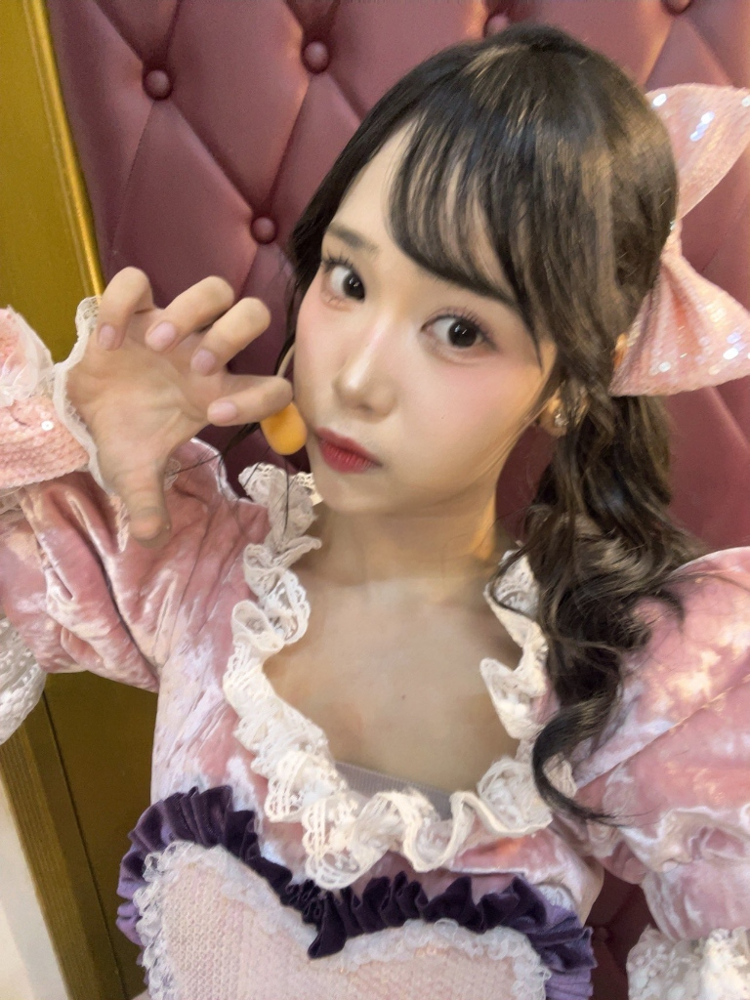

Hari ini kita merayakan dua kado sekaligus: seitansai ke-20 dan pencapaian 100 pertunjukan teater. Halaman ini untuk pestanya — tiup lilin, baca 7 wonders sisi dewasanya, dan tinggalkan ucapanmu. Cerita 100 panggungnya menantimu di teater sebelah.
Padamkan ketiganya dan buat satu permohonan untuk Lana.
Saat lampu pesta meredup dan lilin dinyalakan — tujuh lagu yang menandai sisi dewasa Lana di usia dua puluh.

01Dari setlist Pertaruhan Cinta, Act 2. Lirik playful tentang crush yang "benci-benci tapi suka banget".
benci tapi rindu 💘 baca cerita →Unit song dari setlist Cara Meminum Ramune. Tema perpisahan di bawah hujan yang mellow.
selamat tinggal, tatapan itu baca cerita →Lagu klasik dari setlist Bel Terakhir Berbunyi. Tentang membalas cinta masa lalu dengan semangat baru.
ronde kedua dimulai baca cerita →Unit song dari setlist Te wo Tsunaginagara. Lagu sendu tentang perpisahan, hujan, dan piano.
melodi di tengah hujan baca cerita →Sering muncul di stage — kisah ringan tentang cinta pertama di masa sekolah yang playful.
halo, cinta pertama baca cerita →Lagu klasik tentang melanggar aturan "no dating" di dunia idol — justru membuat cinta makin membara.
aturan dibuat untuk… baca cerita →Unit song ikonik dari setlist Dareka no Tame ni. Metafora burung kehilangan sayap — patah hati dan kebebasan.
terbanglah lebih tinggi baca cerita →↳ kartu di sini juga bisa digeser
Tekan party popper di atas untuk menyalin tagar resmi, lalu bagikan ucapanmu untuk Lana.
Tulis harapan dan ucapan hangatmu — kartunya akan ditempel di dinding pesta di bawah.